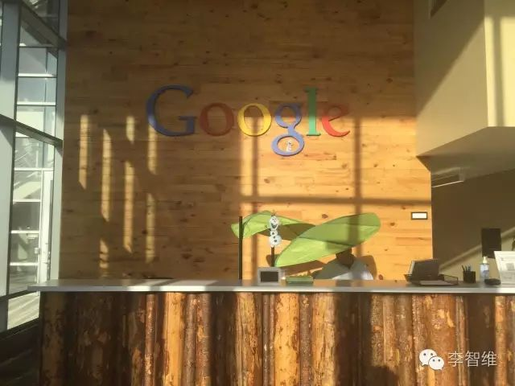

Mit dem 21-jährigen CEO gemeinsam kleine Ziele erreichen | Original, von KI übersetzt

Dies ist ein Foto, das ich im März im Y Combinator im Silicon Valley aufgenommen habe. In dem Raum waren eine Gruppe von Menschen, die gerade ein Startup gründeten, aus der ganzen Welt, meist Anfang 20, wie Studenten im zweiten oder dritten Jahr am MIT. Es gab mir das Gefühl, dass die besten Gleichaltrigen bereits den Weg der Unternehmensgründung eingeschlagen haben. Wenn ich selbst kein Startup gründe, werde ich noch weiter zurückfallen. Also, noch einmal, neu starten.
 Erhalten 218 Likes, vielen Dank für die Unterstützung jedes Freundes.
Erhalten 218 Likes, vielen Dank für die Unterstützung jedes Freundes.
Wie bin ich Schritt für Schritt bis heute gekommen? Was war die treibende Kraft, die mich im Alter von 21 Jahren dazu brachte, alles zu riskieren und entschlossen zu sein, die Dinge zu erreichen?
Erfahrungen
Meine Erfahrungen. Kurz gesagt, habe ich in der Mittelschule mit dem Programmieren begonnen und an Algorithmus-Wettbewerben teilgenommen. Im ersten Studienjahr trat ich der Beijing Forestry University bei, entwickelte mehrere Android-Apps, darunter die von 3500 Studenten genutzte „Beilin Assistant“ und „iword“, das nach einem dritten Platz bei einem Hackathon mehrere Monate lang weiterentwickelt wurde. Im Sommer des ersten Studienjahres absolvierte ich ein Praktikum bei LeanCloud, kündigte dann das Studium und arbeitete anderthalb Jahre bei LeanCloud. Vom Anfänger stieg ich auf und gehörte schließlich zu den Top-Performern unter Kollegen, die zuvor bei Google, Alibaba und Wandoujia gearbeitet hatten. Ich entwickelte die Android- und iOS-Versionen der App „LeanChat“ für das Unternehmen, erstellte zahlreiche Demos und arbeitete am iOS SDK des Unternehmens, was das mir gewährte Gehalt von 15k durchaus rechtfertigte. Im November 2015 gründete ich zusammen mit Ye Gucheng und anderen Freunden „Reviewcode.cn“, veranstaltete später Austauschtreffen und Schulungen und erzielte einen Umsatz von 150.000 RMB. Im Team war ich für das Backend, die Hälfte der Frontend-Entwicklung und die Hälfte der Schulungen verantwortlich, trieb die Produktentwicklung voran und sorgte dafür, dass die Dinge umgesetzt wurden. Im März reiste ich nach Silicon Valley, um zu lernen, besuchte Google und erlebte das Unternehmertum im weltweit besten Inkubator YC. Unterwegs bot sich mir eine großartige Gelegenheit, in Silicon Valley zu arbeiten, die ich jedoch ablehnte. Nach meiner Rückkehr nach China im Juni geriet das Team in eine Schieflage und konnte nicht weitermachen. Ich trat einem Unternehmen bei, das von dem ehemaligen Vizepräsidenten von Jumei, Ye, und dem ehemaligen CTO von Jumei, Yang Jun, gegründet wurde, und arbeitete oft bis zwei oder drei Uhr morgens mit ihnen. In dieser Zeit nutzte ich jede Gelegenheit, um mit ihnen zu sprechen. Beide Chefs, Anfang 30 und äußerst erfolgreich, brachten mir viel bei. Aber ich bin wirklich zu ungeduldig… Ich habe die hohen Erwartungen meiner Chefs enttäuscht und mich wieder selbstständig gemacht…
So, at the age of 21, just before entering my senior year of college, I gave up a salary of 25k and started another business. In fact, those who have worked with me would understand me better, as the introduction above only scratches the surface. For example, I could easily find jobs in the iOS, Android, backend, and frontend fields with salaries ranging from 20k to 30k, and some startups even invited me to be their CTO.
Allerdings bin ich immer noch ziemlich unerfahren. Ich bitte die Experten, die diesen Artikel lesen, mich nicht auszulachen. Schließlich kenne ich inzwischen auch mehr Leute und habe ein gewisses Selbstbewusstsein darüber, wo ich ungefähr stehe.
Warum Unternehmertum?
Ich hatte ursprünglich auch nicht den Mut, ein Unternehmen zu gründen. Es ist eine so komplizierte Angelegenheit. Woher kommt das Geld? Wo findet man die Mitarbeiter? Was soll man tun? Und so weiter. Selbst die Frage, wie man eine Firma anmeldet, war mir völlig unklar. Aber so ist es: Nachdem man viele Dinge erlebt und viele Menschen und Situationen kennengelernt hat, kommt der Mut und das Selbstvertrauen ganz von selbst.
回到高考结束后的暑假，我做了两件事：1）学习了 Lisp 2）反复阅读了《黑客与画家》。那时的我，多年算法竞赛没有取得什么成绩，高考也考得不理想。一方面，被陈立杰等获得国际金牌的大神们碾压；另一方面，在高考中被成千上万的人彻底击败。我真的很平庸，自命不凡的我实际上是多么的平庸……小时候，我以为自己长大后一定会成为一个了不起的人，但现实是，你越来越发现自己其实很菜。因此，压力很大，我需要做点什么来改变现状。
在北京的第一天，我就跑去参加了CSDN举办的中国软件开发者大会，并和大话西游的主程云风前辈聊了聊。我问他，你们当年刚开始写代码的时候有和谁交流吗？他笑着说，没有啊，就自己欣赏呗。刚好看到有人在讲Lisp，是LeanCloud的技术负责人Dennis大哥。他讲完后，我偷偷地跑到第一排，和他聊天，看看他都用什么软件来写代码。回来后，我去网上查了一下，才知道Dennis大哥之前是阿里的中间件技术专家，做了一些开源项目，京东、腾讯等大厂都在使用。
Später schrieb ich Dennis eine E-Mail und bekam daraufhin ein Praktikum und eine Stelle bei LeanCloud. In anderthalb Jahren beobachtete ich aufmerksam das Verhalten meiner Kollegen und des Chefs und lernte von ihren Stärken. Der Chef, Jiang Hong, promovierte an der Yale University, arbeitete drei Jahre bei Google und kehrte dann nach China zurück, um zu gründen, zuerst mit Delicious Bookmarks, dann mit LeanCloud. Ich versuchte, durch sein tägliches Verhalten zu verstehen, wie er all dies erreicht hat. Dennis, als technischer Leiter, trug nicht nur die technische Verantwortung, sondern kümmerte sich auch um das tägliche technische Management. Seine kontinuierlich hohe Produktivität machte mich immer neugierig, wie er das schaffte. Auch die anderen Kollegen waren alle sehr kompetent in ihren Fachgebieten. Ich bin dankbar, dass ich bei LeanCloud eine so großartige „Universität“ erleben durfte.
LeanCloud verbrachte mehr als ein halbes Jahr im Microsoft Inkubator, wodurch ich Freunde und Chefs aus einigen benachbarten Unternehmen kennenlernte, wie WR und LX von Kung Fu Bear und viele Leute von QuantGroup. Sie waren zuvor Produktverantwortliche bei Baidu Video und haben sich dann selbstständig gemacht. Einige von ihnen kamen von der Wall Street oder Google zurück, um zu gründen. Einige Unternehmen bestanden ausschließlich aus Absolventen der Tsinghua-Universität.
在微软孵化器的日子里，我其实认识了很多人，Matt Scott，码隆科技的 CTO，之前是微软的资深开发主管，也是多篇世界顶级会议论文的作者。在苏州街深夜两点的路上，他对我说：“小伙子，要有耐心，打造你的核心技能。要想做出世界一流的工作，不仅仅是好奇心，还需要那种改变世界的憧憬。想象有一天，你的工作会对世界产生巨大的影响。”
Später lernte ich auch einige beeindruckende Gleichaltrige kennen, wie zum Beispiel JZP, der damals ein Praktikum bei LeanCloud machen wollte, um die Atmosphäre eines Startups zu erleben, und mir eine E-Mail schrieb. ZP hatte bereits in der zweiten Klasse der Mittelschule den ersten Preis im nationalen Informatikwettbewerb gewonnen. Jetzt ist er in der Yao-Klasse der Tsinghua-Universität und verbringt seine Semesterferien mit Praktika bei Microsoft und Google. In seiner Freizeit liest er den Quellcode von Browser-Engines und MongoDB und beschäftigt sich mit Deep Learning. Gelegentlich nimmt er an ACM-Wettbewerben teil und holt sich zur Entspannung den ersten Preis. Nach einigen Begegnungen stellte ich fest, dass diese Leute, weil sie sich schon lange mit schwierigen Problemen beschäftigen, keine Schwierigkeiten mit Dingen haben, die ich als sehr schwierig empfinde. Sie sind voller Neugier auf die Prinzipien der Dinge und vertiefen sich in die Dinge, die sie mögen.
Später kam Yilong ins Unternehmen. Sein Weibo-Account „iOS 程序犭袁“ hatte über 20.000 Follower, hauptsächlich iOS-Entwickler. Ich half Yilong, sich mit den Geschäftsabläufen des Unternehmens vertraut zu machen, und Yilong teilte im Gegenzug meine Open-Source-Projekte, was einige Leute dazu brachte, mir zu folgen. Bekanntheit ist eine gute Sache. Obwohl Entwickler eigentlich still Code schreiben und ihre Fähigkeiten verbessern sollten, ziehen die Dinge, die man macht, mehr Aufmerksamkeit und Feedback auf sich, wenn man bekannt ist. Das gilt auch für Unternehmen: Man braucht nicht nur gute Produkte, sondern auch eine gute Marketingstrategie.
Im November habe ich Ye Gucheng kennengelernt, der ebenfalls ein bekannter Name in der iOS-Community ist. Beim gemeinsamen Essen kamen wir auf eine Geschäftsidee, über die wir uns sehr gut unterhielten. Da ich ohnehin den Wunsch hatte, ein eigenes Unternehmen zu gründen, war dies der perfekte Funke, um meine unternehmerische Reise zu starten. Nach zwei bis drei Monaten Entwicklung haben wir Mitte Februar unser Produkt „Reviewcode.cn“ auf den Markt gebracht. Bis Ende Februar verzeichneten wir täglich etwa 8.000 Page Views (PV). Allerdings stellten wir fest, dass die Idee kein starkes Bedürfnis erfüllte und unsere Fähigkeiten im Offline-Bereich zu schwach waren. Daher beschlossen wir, uns auf den Austausch und Workshops zu konzentrieren und zu versuchen, Offline-Veranstaltungen zu organisieren und uns mit Offline-Aktivitäten zu beschäftigen. Später habe ich täglich mit den Teilnehmern Programmieren gelernt und abends auf Douyu unterrichtet, sodass sowohl Remote- als auch vor-Ort-Teilnehmer zuschauen konnten. Meine Erfahrung ist, dass Offline-Aktivitäten durchaus machbar sind, auch wenn sie viel Lauferei und Aufwand bedeuten – es ist nicht so schwierig, wie man es sich vorstellt.
Im März habe ich einen Ausflug ins Silicon Valley unternommen. Dank der Hilfe meines ehemaligen Tutors XH aus dem ersten Studienjahr konnte ich bei Google frühstücken und die Umgebung besichtigen. Ich habe seine Kollegen und Mitbewohner kennengelernt, die an der Peking-Universität und der University of Science and Technology of China ihren Master gemacht haben und nach ihrem Abschluss zu Google gekommen sind. Drei von ihnen mieten gemeinsam eine große Villa und fahren normalerweise mit dem Auto zur Arbeit. Am Wochenende unternehmen sie Ausflüge nach Yosemite und New York. Ich habe eine ganz andere Lebensweise kennengelernt.

Ich habe das Computer History Museum besucht und die Meisterwerke verschiedener Vorgänger gesehen, von der Entwicklung des Abakus bis hin zum Personal Computer.

In Stanford, I met some really impressive people. There was a fellow countryman pursuing a Ph.D. in biology, a peer who grew up in the U.S. and is studying computer science at Stanford, and a guy who graduated from Cambridge and is now doing a Ph.D. in chemistry here.
Dann ging ich zu Y Combinator und traf viele junge Leute, die dort ihr eigenes Unternehmen gründeten. Ich lernte ein chinesisches Team namens „Mailtime“ kennen, das auf Chinesisch „简信“ heißt. Der Chef, HH, ist ein Seriengründer, der zuvor Talkbox entwickelt hat, den Vorreiter der Sprach-Chat-Funktion. Er erzählte, dass er auf die Idee kam, als er mit seinem Vater chattete, der nicht tippen konnte, und sich fragte, ob man stattdessen Sprachnachrichten verschicken könnte. Das Mailtime-Team ist ebenfalls sehr talentiert. Der Mitgründer Hockey hat in der High School den ersten Platz im nationalen Algorithmuswettbewerb belegt, hat an der Tsinghua-Universität und der UC Berkeley studiert und zwei Jahre bei Twitter gearbeitet. Evan hat an der Tsinghua-Universität und der Carnegie Mellon University studiert. YX-Jie, Frank und andere sind ebenfalls Absolventen der Chinese University of Hong Kong und sehr talentiert. Sie erzählten mir von einer Party, die sie im Haus des Gmail-Gründers besucht hatten, und wie luxuriös deren Haus sei.
Auch in Bezug auf die Unterkunft habe ich viel gelernt. Der Vermieter bei Airbnb war ein Einheimischer, der bereits 1984, als Apple an die Börse ging, von Steve Jobs gehört hatte und seit Jahrzehnten alle möglichen Nachrichten über ihn verfolgte. Er erzählte mir, dass die High-Tech-Branche viel Energie erfordere und dass dies etwas für junge Leute sei. Plötzlich fühlte es sich an, als wäre Steve Jobs ganz in der Nähe.
Ich habe auch ein NBA-Spiel besucht und verschiedene Orte wie den Strand, die Golden Gate Bridge, den Union Square und das Rathaus von San Francisco erkundet. Die Welt ist groß, und es macht jeden Tag Spaß, Englisch zu sprechen. Das Gefühl, die Welt zu erkunden und verschiedene Menschen kennenzulernen, ohne zu wissen, was der Tag bringen wird, ist einfach wunderbar. Zum Beispiel habe ich mich an der Bar mit einer hübschen Frau neben mir unterhalten, sie ist Regisseurin und hat mir Fotos von ihren Skiurlauben und den atemberaubenden Naturlandschaften gezeigt. Sie, der Sonnenuntergang und das endlose Schneemeer waren einfach wunderschön. Erfolgreich im Beruf und gleichzeitig viel unterwegs zu sein – wer hätte gedacht, dass das Leben so glanzvoll sein kann.

Im Juni gab es einige Probleme mit der Teamrichtung. In einer Notlage begann ich, nach einem Job zu suchen, und lernte den ehemaligen Vice President von Jumei, Herrn Ye, kennen. Zu dieser Zeit bauten sie ein Team für die Plattform „Paipaijiang“ auf, die Live-Streaming und Einkaufen kombiniert. Herr Ye hat ein wirklich beeindruckendes Leben: Er absolvierte die Beijing Normal University, gründete ein Jahr nach seinem Abschluss im September 2009 den Kosmetik-E-Commerce-Website „Fenpi’er“, kämpfte ein halbes Jahr lang mit Jumei und fusionierte schließlich im April 2011 mit Jumei. Danach wurde er Vice President für die Lieferkette und war bis zum Börsengang von Jumei im Jahr 2014 tätig. Anschließend war er für den Aufbau des Jumei Duty-Free-Shops verantwortlich. Nach seinem Ausscheiden bei Jumei im Jahr 2015 arbeitete er ein Jahr lang als Angel-Investor. So ein beeindruckendes Leben – genau das, was ich mir wünsche! Auch der CTO, Brother Yang Jun, ist ein sehr fähiger Mann. Zuvor war er CTO bei Jumei und hatte davor bereits ein Unternehmen gegründet und verkauft. Also sagte ich zu, ihrem Team beizutreten!
In my month at Paipaijiang, whenever I had free time, I would chat with Boss Ye. During meals, I would grab a plate and eat with him. In the evenings, when he had some free time, we would take a few laps around the hallway. We talked about how they started their business, how they secured brand collaborations, and listened to him explain how operations worked. He said, even if users don’t like something, you need to find out exactly why they don’t like it. Don’t be afraid to push people; learn how to push. If pushing once doesn’t work, push a second time, a third time, keep pushing. Don’t always try to figure things out on your own; if you don’t understand, ask, and don’t be shy about asking. Boss Ye is also a very hardworking person, often staying up until two or three in the morning waiting for interviewees, busy all day long. Even on his day off on Saturday, he would be fiddling with the app, testing the product. We often worked until after 11 PM, sometimes until two or three in the morning, six days a week. So, apart from sleeping, there was almost no personal time. We were all quite willing to do this. That’s the impressive part—he managed to find a group of us with the potential to work hard and then got us to push ourselves.
Nachdem ich eine Woche dort verbracht hatte, fragte er mich, ob mir der Ort gefalle. Ich sagte, ja, ich liebe es, mich voll und ganz in die Arbeit zu stürzen. Egal, was wir in Zukunft tun werden, es wird besser für unsere Zukunft sein. Er sagte, ja, je härter wir jetzt arbeiten, desto besser wird die Zukunft sein. In seinem Herzen dachte er vielleicht, dass dies wirklich ein guter Mitarbeiter ist. Haha. Es ist wirklich so, ich habe nicht absichtlich versucht, dem Chef zu gefallen. Ich bereue es jetzt sehr, dass ich in einigen meiner früheren Arbeitstage nicht härter gearbeitet habe, damit ich besser in der Lage wäre, ein Unternehmen zu gründen.
Der Chef hat mir ein Beispiel für einen CEO gegeben. Junge hingegen hat mir ein Beispiel für einen CTO gegeben. In den ersten zwei Wochen, die ich dort war, habe ich oft mit Junge bis in die frühen Morgenstunden gearbeitet. Junge, der ehemalige CTO von Jumei, ist jemand, der mehrere Immobilien besitzt. Obwohl er bereits so erfolgreich ist, arbeitet er immer noch so hart. Was für eine Entschuldigung habe ich als Anfänger, nicht auch mein Bestes zu geben? Später wurde Junge krank, und so haben wir es nicht mehr so lange durchgezogen, sondern sind gegen zwei oder drei Uhr nach Hause gegangen. Wir gingen durch das kunstvolle Wangjing SOHO und kamen zur Straße gegenüber dem Poly Theater, wo wir auf Junges Uber warteten, um die Gelegenheit zu nutzen, noch ein paar Worte mit ihm zu wechseln. Er erzählte mir viele Geschichten über Jumei, wie es früher während der großen Verkaufsaktionen zu Ausfällen kam und wie sie ein bis zwei Jahre gebraucht haben, um das Problem zu lösen. Nachdem es gelöst war, trat er zurück. Er erzählte mir, wie er das Hunderte von Mitarbeitern umfassende Entwicklungszentrum von Jumei in Chengdu aufgebaut hat. Bei Wochenend-Wanderungen lernte er einige ausdauernde IT-Kollegen kennen, die er zu Jumei einlud und die später hervorragende Leistungen erbrachten. Während der großen Verkaufsaktionen saß Chen Ou daneben und beobachtete, wie er Code schrieb und Bugs behebt.
工作了一个月后，听了这么多故事，我心中依然无法压抑自己从零开始把公司做大的欲望。我找叶老板聊了聊，他说：“听起来，你似乎很关注表面的东西，听到谁谁很厉害、很牛逼，就会感到焦虑。我当初有一种盲目的自信，相信自己一定能成功。你去看看那些成大事的人，他们的内心都很强大。”
这句话在我脑海中萦绕不去，生怕忘记，便记在了本子上。骏哥最后也跟我说，世界是残酷的，像陈欧、像叶老板，他们那些曾经到达过顶点的人，吃过的苦、经历过的困难，你完全无法想象。保重吧。
In meinem Kopf kreisen die Gedanken unaufhörlich, und ich versinke in tiefes Nachdenken.
Es ist an der Zeit, den Weg zu beschreiten, und ich sage mir selbst, dass ich bereit sein muss, Entbehrungen auf mich zu nehmen. Nachdem ich die Erfahrungen meines Chefs kennengelernt habe, glaube ich, dass auch ich die Hoffnung habe, so etwas zu erreichen. Obwohl der Weg voller Hindernisse und Tränen sein wird, bin ich bereit, hinauszugehen und die besten Jahre meines Lebens zu nutzen, um die schwierigsten Dinge zu tun und eine wunderschöne Lebensgeschichte zu schreiben.
Nun, Freunde, seid ihr bereit, mit mir weiterzugehen?
In den letzten Monaten war ich sehr beschäftigt und produktiv: Ich habe eine Firma registriert, Stempel angefertigt, mich bei der Steuerbehörde gemeldet, ein Bankkonto eröffnet, Backend- und Frontend-Entwicklung betrieben sowie Designentwürfe erstellt. Mein anderer Partner ist für die Entwicklung der iOS-App verantwortlich und hat bereits einen Großteil davon fertiggestellt. Obwohl ich ursprünglich schnell eine erste Version online stellen wollte und nicht viel Zeit darauf verwendet habe, die richtigen Leute zu finden, habe ich festgestellt, dass das Unternehmen nur dann schneller vorankommen kann, wenn wir talentierte Menschen um uns versammeln. Daher suchen wir derzeit nach Design-Partnern, technischen Partnern (Backend oder Android), Betriebspartnern und allgemeinen Partnern (solange sie herausragend sind). Der Anteil der Partner kann zwischen 10 % und 30 % liegen. Dies ist nicht meine Firma, sondern die Firma einer Gruppe junger Menschen mit gemeinsamen Ambitionen und Kampfgeist!
Was wir vorhaben, ist, alle Kontakte und Ressourcen, die ich über die Jahre aufgebaut habe, zu nutzen, um die Idee zu verfolgen, die die größte Chance hat, Wert zu schaffen (Geld zu verdienen). Es handelt sich um eine neue Richtung, die ich durch Einblicke in die Bereiche Cloud Computing, E-Commerce und IT-Bildung in den letzten Jahren entdeckt habe. Ich bin bereit, meine wertvolle Zeit und Energie zu investieren, um dieses Vorhaben erfolgreich umzusetzen.
Meine WeChat-ID ist lzwjava. Wenn wir bereits Freunde sind, können Sie mir direkt eine Nachricht schicken. Wenn wir uns noch nicht kennen, können Sie mich gerne auf WeChat hinzufügen und mir Ihren Lebenslauf senden. Ich freue mich, Sie kennenzulernen, und hoffe, dass wir gemeinsam Träume verwirklichen können! Wenn Sie mit mir befreundet sein möchten, können Sie mich auch gerne auf WeChat hinzufügen. Außerdem bitte ich um Ihre Hilfe und Weiterleitung. Vielen Dank!
Das Leben ist kurz. Plötzlich sind wir in dem Alter, in dem unsere Eltern uns gezeugt haben, und dann sind wir schon dreißig, vierzig. Wir können dreißig Jahre lang in einem gemächlichen Tempo arbeiten, oder wir können uns vier Jahre lang abrackern, um den Lebensunterhalt für ein ganzes Leben zu verdienen. Es gibt noch so viele schöne Dinge, die wir noch nicht getan haben: die Welt bereisen, einen Film drehen, die Natur erkunden. Wir könnten erst einmal genug Geld für ein ganzes Leben verdienen und dann diese schönen Träume verwirklichen oder ein größeres Unternehmen gründen, um der Gesellschaft zu nützen. Die Generation der 90er Jahre kommt langsam zum Vorschein. Da ohnehin jemand im Rampenlicht stehen muss, warum sollten wir es nicht sein? Wir haben seit unserer Kindheit immer im Schatten der Kinder anderer gelebt. Wir können uns selbst eine schwierige Herausforderung stellen und eine Kurve nehmen, um zu überholen! Sich abzumühen ist an sich schon eine interessante Sache, und die Früchte, die nach harter Arbeit geerntet werden, schmecken umso süßer!
Die durchschnittlichen Piloten im Zweiten Weltkrieg waren Anfang zwanzig. Kommt, lasst uns in unseren kampfstärksten Jahren gemeinsam ein großartiges Unternehmen gründen!